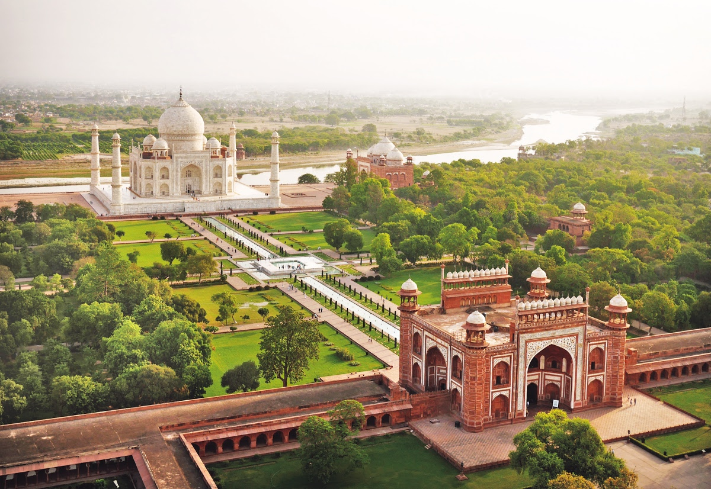

TAJMAHAL
The Taj Mahal is a renowned monument located in Agra, India. It is one of the most iconic and recognizable structures in the world and is often referred to as the "Crown of Palaces."
The Taj Mahal was commissioned by Shah Jahan in 1631, to be built in the memory of his wife Mumtaz Mahal, who died on 17 June that year, while giving birth to their 14th child, Gauhara Begum. Construction started in 1632, and the mausoleum was completed in 1648, while the surrounding buildings and garden were finished five years later....More info...

REDFORT
The Red Fort or Lal Qila is a historic fort in the Old Delhi neighbourhood of Delhi, India, that historically served as the main residence of the Mughal emperors.
Emperor Shah Jahan commissioned construction of the Red Fort on 12th May 1638, when he decided to shift his capital from Agra to Delhi. Originally red and white, its design is credited to architect Ustad Ahmad Lahori, who also constructed the Taj Mahal. The fort represents the peak in Mughal architecture under Shah Jahan and combines Persianate palace architecture with Indian traditions....More info...
QUTUB MINAR
The Qutb Minar, also spelled Qutub Minar and Qutab Minar, is a minaret and "victory tower" that forms part of the Qutb complex, which lies at the site of Delhi’s oldest fortified city, Lal Kot, founded by the Tomar Rajputs. It is a UNESCO World Heritage Site in the Mehrauli area of South Delhi, India.
The Qutb Minar was built over the ruins of the Lal Kot, the citadel of Dhillika. Qutub Minar was begun after the Quwwat-ul-Islam Mosque. Drawing references from their Ghurid homeland, Qutub-ud-Din Aibak and Shamsu’d-Din Iltutmish constructed a minar (minaret) at the south-eastern corner of the Quwwatu’l-Islam between 1199 and 1503....More info...

MYSORE PALACE
Mysore Palace, also known as Amba Vilas Palace, is a historical palace and a royal residence (house). It is very big palace It is located in Mysore, Karnataka, India. It used to be the official residence of the Wadiyar dynasty and the seat of the Kingdom of Mysore.
The palace is in the centre of Mysore, and faces the Chamundi Hills eastward. Mysore is commonly described as the 'City of the Palaces', and there are seven palaces including this one. However, the Mysore Palace refers specifically to the one within the new fort....More info...
GOLDEN TEMPLE
The Golden Temple (also known as the Harimandir Sahib is a gurdwara located in the city of Amritsar, Punjab, India. It is the preeminent spiritual site of Sikhism. It is one of the holiest sites in Sikhism, alongside the Gurdwara Darbar Sahib Kartarpur in Kartarpur, and Gurdwara Janam Asthan in Nankana Sahib.
The man-made pool on the site of the temple was completed by the fourth Sikh Guru, Guru Ram Das, in 1577. In 1604, Guru Arjan Dev, the fifth Sikh Guru, placed a copy of the Adi Granth in Harmandir Sahib and is the prominent figure in the development of gurudwara who built it in the 16th century....More info...